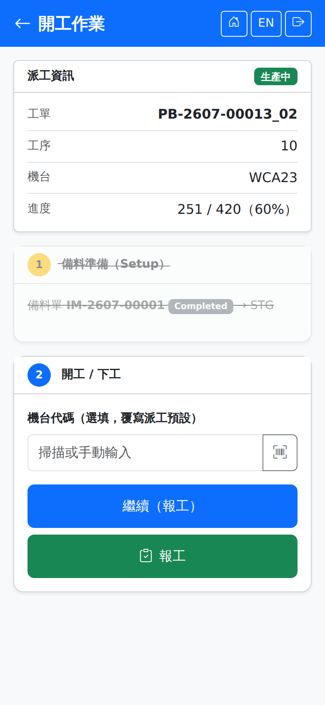

從派工清單點卡片進入。同一頁包含兩個步驟：步驟一備料準備、步驟二開工／下工。上方的派工資訊卡顯示工單、工序、機台與進度（已完成／派工量與百分比）。Opened by tapping a card in the dispatch list. The page holds two steps: step 1 setup, step 2 start and end work. The dispatch card at the top shows the work order, operation, machine and progress (quantity done out of the dispatched quantity, with a percentage).

開工作業畫面（備料已完成、生產中的派工）Production session screen (a dispatch whose setup is done and which is in progress)
步驟一：備料準備Step 1: setup
這一區顯示本派工已開立的備料單，以及尚未備妥的用料清單。This area shows the staging orders already raised for this dispatch and the list of material that is not ready yet.
1若顯示「尚有 N 項用料未備妥」，可點「建立備料單」開出草稿單，備料倉取自工作中心的預設設定。沒有待備料件時這顆按鈕不會出現。If it says "N material(s) still not ready", tap "Create Staging Order" to raise a draft; the staging warehouse comes from the work center default. The button does not appear when nothing is outstanding.
2點「開始備料」開始計算備料（換模、換線）工時，派工轉為「備料中」。Tap "Start Setup" to begin clocking setup time (tooling or line changeover); the dispatch moves to "Setup".
3備妥後點「備料完成」，派工轉為「備料完成」，步驟一整區會變灰表示已結束。When it is ready, tap "Setup Done"; the dispatch moves to "Ready" and step 1 greys out to show it is finished.
模具不需在此回報——後端一律沿用排程時指定的模具，打次統計與模具衝突偵測不受影響。工序未設準備工時者可略過步驟一直接開工。Tooling does not have to be reported here — the system always uses the tooling assigned during scheduling, and shot counting and tooling conflict detection are unaffected. Operations with no setup time defined can skip step 1 and start straight away.
確認鎖料與實際揀料移倉不在手機執行，請於桌機的「備料單」畫面完成。Confirming the stock lock and actually picking and moving the material are not done on the phone; use the Material Staging screen on the desktop.
步驟二：開工／下工Step 2: starting and ending work
1「機台代碼」為選填，掃描或輸入可覆寫派工預設的機台；留空即用派工原本指定的機台。The "Machine code" field is optional: scan or type it to override the dispatch's default machine, or leave it blank to use the machine already assigned.
2點「開工」，畫面出現計時器開始累計本次上工時間。若出現「工單送審中或已被退回」，表示工單尚未核准，須待主管核准後才能開工；若出現「工單不是已投產或生產中」，表示工單已撤回或被駁回，須重新投產。Tap "Start" and a timer appears, counting this session's elapsed time. If you see "The work order is pending approval or was rejected", the work order has not been approved yet; it can be started only after approval. If you see "The work order is not released or in production", it was withdrawn or rejected and has to be released again.
3生產期間點「報工」前往報工頁回報數量，可回報多次。During production, tap "Report" to go to the reporting screen and enter quantities, as often as needed.
4本次作業結束時點「完工（結束本次上工）」，系統關閉本次上工並結算工時；按鈕會出現確認提示。At the end of the session tap "Finish (end this session)"; the system closes the session and settles the hours, after a confirmation prompt.
點「完工」並不會回報數量。若本次還有產出沒回報，請先到報工頁按「完工並報工」，那一顆會在回報最後一批數量的同時結束上工。"Finish" does not report any quantity. If this session still has output that has not been reported, go to the reporting screen first and use "Finish and report", which reports the last batch and ends the session in one action.
| 看到的按鈕The button you see | 代表的情況What it means |
|---|
| 開工Start | 尚未開工，或前一次上工已結束。Work has not started, or the previous session has ended. |
| 繼續（報工）Continue (report) | 這張派工已在生產中，但本次上工不是在這支手機開的（例如換班交接）。此時只能去報工，不能重複開工。The dispatch is already in progress but the session was not opened on this phone (a shift handover, for example). You can only report; you cannot start it again. |
| 再次開工Start Again | 剛按過完工。尚未生產完的話可以再開一輪。"Finish" has just been tapped. If production is not complete you can start another round. |
累計良品數達到派工量時，派工會自動結案，不需另外操作。The dispatch closes automatically once the cumulative good quantity reaches the dispatched quantity; nothing else is needed.
SmartFactory MES 系統使用手冊 | 如需協助請聯繫系統管理者SmartFactory MES User Manual | Contact your system administrator if you need help